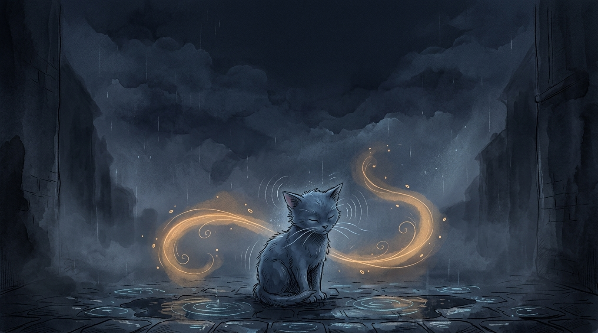

Música y audio ambiental
Piano en portada, lluvia y efectos de escena.
Alto Contraste
Máximo contraste en cuadros de texto y botones.
Subtítulos de sonido
Describe los sonidos ambientales dentro del diálogo.
Reducir animaciones
Pausa el movimiento suave del fondo.
Tamaño de letra